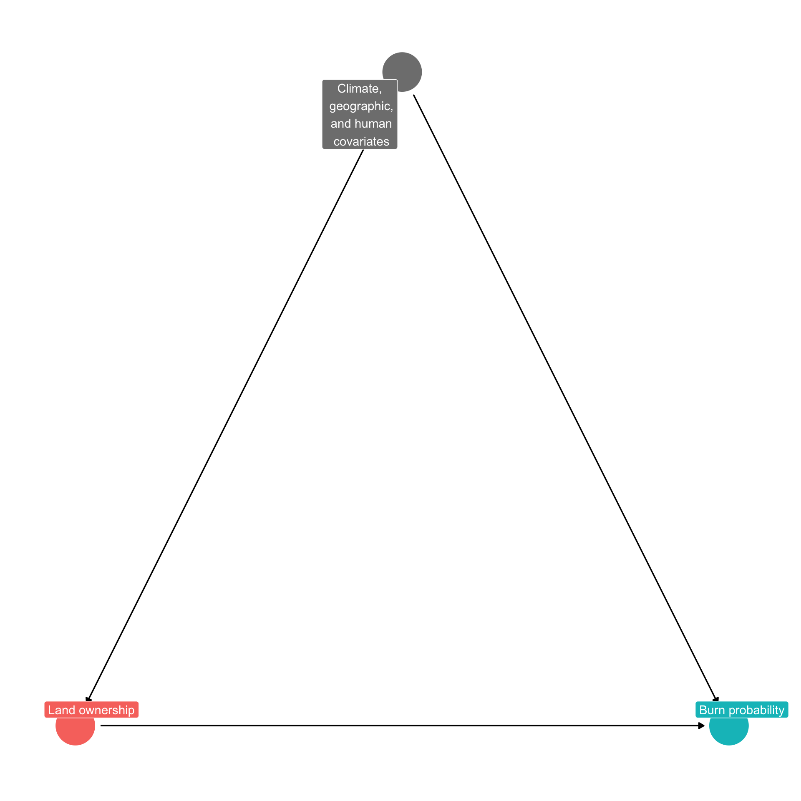
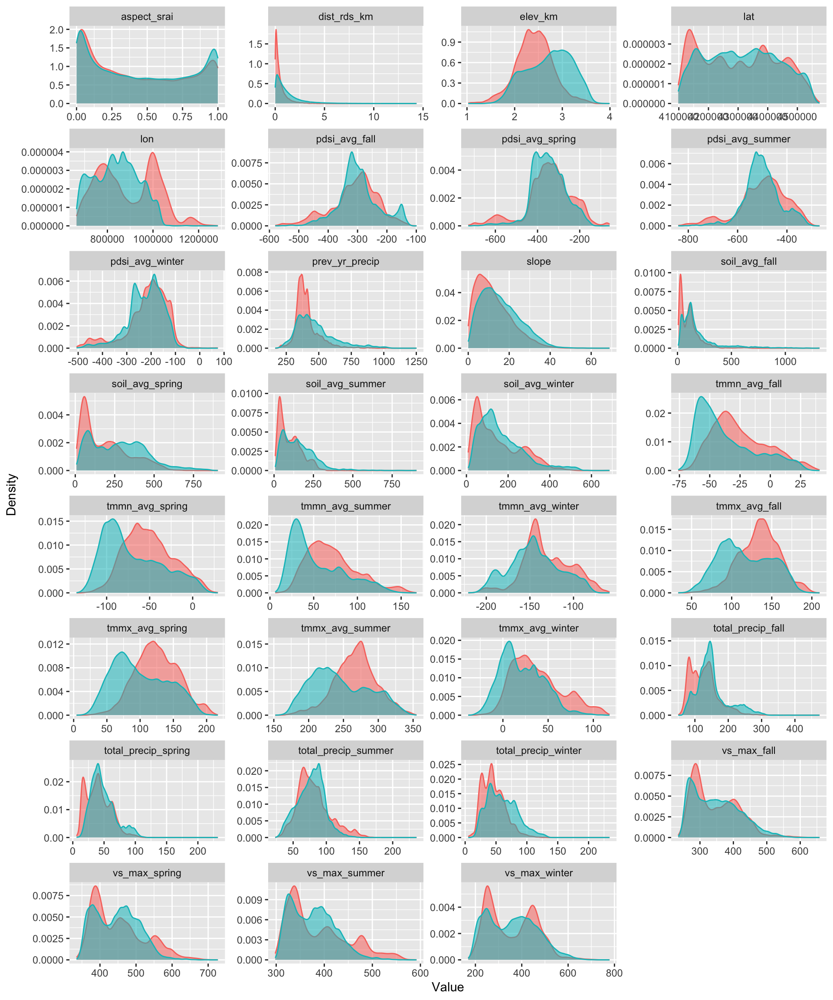
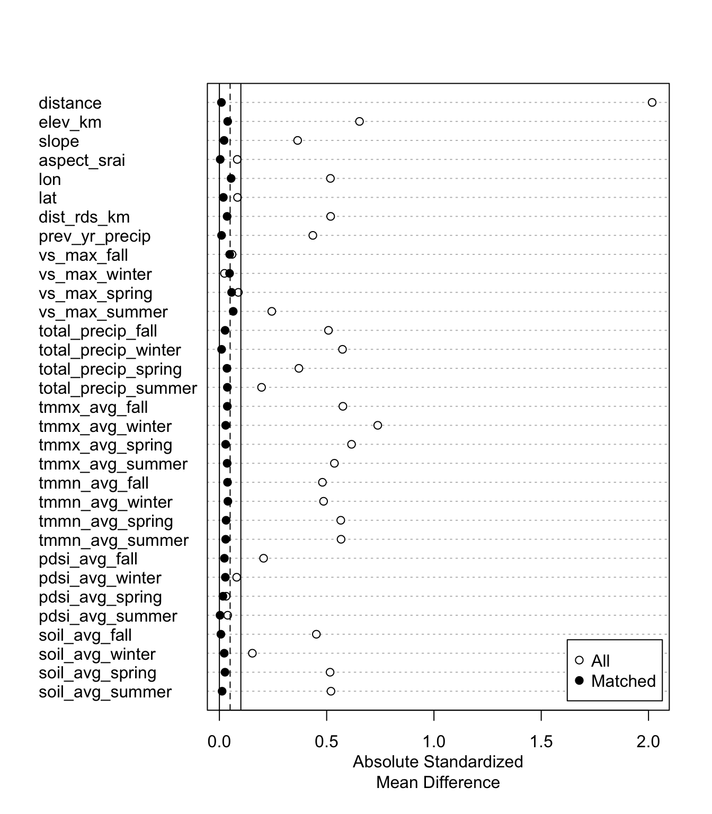
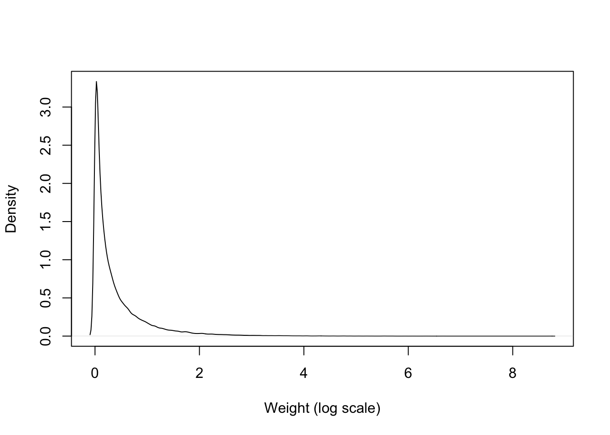
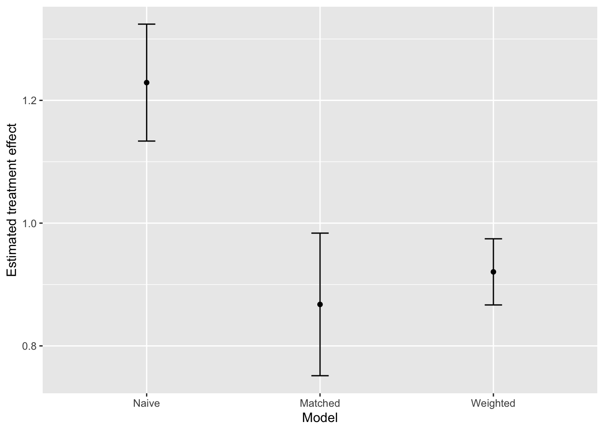

Tutorial on propensity score matching and inverse probability of treatment weighting
Description
This tutorial demonstrates how to use propensity score matching and inverse probability of treatment weighting using a real dataset from Siegel et al. 2022. The dataset for the entire western US is very large and unwieldy, so you’ll work with a subset of data for a single year in Colorado.
Set up
Load the packages used for data manipulation (tidyverse, sf), making a directed acyclic graph (ggdag), matching (MatchIt), weighting (ipw), and regression models (lme4).
The context
The Siegel et al. 2022 study examines the effect of forest management (through the proxy of land ownership) on annual burn probability in forests of the western US. Specifically, it looks at the effect of federal (treatment) vs. private (control) ownership on wildfire occurrence in sample units.
Directed acyclic graph
Here’s a DAG for the research question:
The data
The data are in the file matching_ipw_data.csv.
Variable names
- state: the state the sample unit is from (Colorado)
- UID: a unique identifier for each sample unit
- year: the year that the fire and climate data is from (2002)
- burned: whether or not the unit burned in 2002 (0 = unburned, 1 = burned)
- prot_cat_recl: the ownership class. 0 = private, 1 = federal
- dist_rds_km: distance to the nearest road, in kiometers
- slope: slope, in degrees
- aspect_srai: solar radiation aspect index
- elev_km: elevation, in 1000 m
- lon: longitude
- lat: latitude
- pdsi_avg_season: seasonal average Palmer Drought Severity Index value (fall, spring, summer, winter)
- soil_avg_season: seasonal average soil moisture (fall, spring, summer, winter)
- tmmn_avg_season: seasonal average minimum temperature (fall, spring, summer, winter)
- tmmx_avg_season: seasonal average maximum temperature (fall, spring, summer, winter)
- vs_max_season: seasonal average maximum wind speed (fall, spring, summer, winter)
- total_precip_season: total seasonal precipitation (fall, spring, summer, winter)
- prev_yr_precip: total precipitation in the previous year
Data exploration
What’s the breakdown of private (value = 0) vs. federal (value = 1) units?
| Var1 | Freq |
|---|---|
| 0 | 22877 |
| 1 | 60654 |
What’s the breakdown of units that burned (value = 1) in 2002 vs. units that did not burn (value = 0)?
| Var1 | Freq |
|---|---|
| 0 | 82189 |
| 1 | 1342 |
How do the private (in red) vs federal (in blue) units differ in terms of potential confounders?

Run naive regression
We could just run a naive regression, ignoring the potential impact of confounders. There are some highly correlated covariates in the model, but let’s ignore them for now. Let’s see what that would yield:
| Variable | Estimate | Std. Error | p value |
|---|---|---|---|
| (Intercept) | -14.088 | 3.606 | 0.000 |
| prot_cat_recl1 | 1.229 | 0.095 | 0.000 |
| dist_rds_km | -0.079 | 0.029 | 0.007 |
| slope | 0.019 | 0.003 | 0.000 |
| aspect_srai | 0.149 | 0.084 | 0.077 |
| elev_km | 1.627 | 0.215 | 0.000 |
| pdsi_avg_winter | -0.014 | 0.002 | 0.000 |
| pdsi_avg_spring | -0.021 | 0.003 | 0.000 |
| pdsi_avg_summer | 0.036 | 0.004 | 0.000 |
| pdsi_avg_fall | -0.004 | 0.003 | 0.143 |
| soil_avg_winter | 0.000 | 0.001 | 0.597 |
| soil_avg_spring | 0.006 | 0.001 | 0.000 |
| soil_avg_summer | -0.002 | 0.001 | 0.200 |
| soil_avg_fall | -0.002 | 0.001 | 0.003 |
| tmmn_avg_winter | -0.112 | 0.011 | 0.000 |
| tmmn_avg_spring | 0.054 | 0.026 | 0.035 |
| tmmn_avg_summer | -0.095 | 0.022 | 0.000 |
| tmmn_avg_fall | 0.131 | 0.026 | 0.000 |
| tmmx_avg_winter | 0.133 | 0.012 | 0.000 |
| tmmx_avg_spring | -0.017 | 0.021 | 0.431 |
| tmmx_avg_summer | 0.265 | 0.021 | 0.000 |
| tmmx_avg_fall | -0.395 | 0.029 | 0.000 |
| vs_max_winter | 0.044 | 0.004 | 0.000 |
| vs_max_spring | -0.038 | 0.005 | 0.000 |
| vs_max_summer | -0.007 | 0.005 | 0.157 |
| vs_max_fall | -0.045 | 0.006 | 0.000 |
| total_precip_winter | -0.152 | 0.008 | 0.000 |
| total_precip_spring | -0.034 | 0.007 | 0.000 |
| total_precip_summer | 0.130 | 0.007 | 0.000 |
| total_precip_fall | 0.044 | 0.005 | 0.000 |
| prev_yr_precip | -0.003 | 0.003 | 0.196 |
Use matching to overcome issues with observed confounding variables
Match the data
Match the data on the observable covariates, using the MatchIt package. You can play around with the settings to see how it affects the matched data you end up with.
Assess match quality
Take a look at the quality of the matches: how many units were matched? Control = private units, Treated = federal units
| Control | Treated | |
|---|---|---|
| All (ESS) | 22877 | 60654 |
| All | 22877 | 60654 |
| Matched (ESS) | 14945 | 14945 |
| Matched | 14945 | 14945 |
| Unmatched | 7932 | 45709 |
| Discarded | 0 | 0 |
What are the covariate means in the matched dataset for the treated (federal) and control (private) units? What was the covariate balance after matching?
| Means Treated | Means Control | Standardized Mean Difference | |
|---|---|---|---|
| distance | 0.6175546 | 0.6158610 | 0.0094201 |
| elev_km | 2.5041427 | 2.4860995 | 0.0386318 |
| slope | 13.3461585 | 13.1416783 | 0.0218229 |
| aspect_srai | 0.4408603 | 0.4421638 | -0.0037552 |
| lon | 850258.8129272 | 845066.5747204 | 0.0544996 |
| lat | 4319761.5608274 | 4321966.2446682 | -0.0183548 |
| dist_rds_km | 0.5773463 | 0.5285751 | 0.0359075 |
| prev_yr_precip | 415.2926731 | 413.7834727 | 0.0100340 |
| vs_max_fall | 333.4980930 | 330.1436601 | 0.0480587 |
| vs_max_winter | 337.5478086 | 332.5623285 | 0.0474268 |
| vs_max_spring | 433.4669789 | 430.1073938 | 0.0569886 |
| vs_max_summer | 370.0096353 | 367.1274005 | 0.0643136 |
| total_precip_fall | 135.4748745 | 136.7334225 | -0.0266053 |
| total_precip_winter | 49.2408832 | 48.9946470 | 0.0102433 |
| total_precip_spring | 43.5216460 | 44.2109067 | -0.0351669 |
| total_precip_summer | 74.1271328 | 73.3822014 | 0.0370406 |
| tmmx_avg_fall | 129.5169399 | 130.7038920 | -0.0368784 |
| tmmx_avg_winter | 30.7551466 | 31.4414408 | -0.0293219 |
| tmmx_avg_spring | 117.5830043 | 118.7652058 | -0.0290855 |
| tmmx_avg_summer | 262.3050742 | 263.7936657 | -0.0361478 |
| tmmn_avg_fall | -29.5255715 | -28.6079402 | -0.0378691 |
| tmmn_avg_winter | -136.7402699 | -135.5962752 | -0.0395408 |
| tmmn_avg_spring | -56.5992863 | -55.5367012 | -0.0311808 |
| tmmn_avg_summer | 64.7037359 | 65.6066020 | -0.0292879 |
| pdsi_avg_fall | -307.7629977 | -306.1462250 | -0.0233885 |
| pdsi_avg_winter | -221.2940560 | -223.2854243 | 0.0277561 |
| pdsi_avg_spring | -351.1321289 | -352.4421100 | 0.0165642 |
| pdsi_avg_summer | -504.4508308 | -504.6720419 | 0.0030818 |
| soil_avg_fall | 123.7579123 | 125.0271440 | -0.0069754 |
| soil_avg_winter | 163.2296866 | 165.6294190 | -0.0225604 |
| soil_avg_spring | 210.8781755 | 215.3971451 | -0.0262021 |
| soil_avg_summer | 113.1436601 | 114.4098138 | -0.0126119 |
Comparison of standardized mean differences in the covariate values in the full vs. matched dataset

Analyze the matched dataset
Extract the matched data
First, you’ll need to extract the matched data and use the UIDs from the matched data to subset the full dataset for analysis.
Model the effect of ownership/management on wildfire probability
Again, there are correlated covariates, but let’s just ignore them
| Variable | Estimate | Std. Error | p value |
|---|---|---|---|
| (Intercept) | -41.135 | 7.993 | 0.000 |
| prot_cat_recl1 | 0.868 | 0.116 | 0.000 |
| dist_rds_km | -0.057 | 0.103 | 0.578 |
| slope | 0.021 | 0.006 | 0.000 |
| aspect_srai | 0.044 | 0.142 | 0.760 |
| elev_km | 1.996 | 0.413 | 0.000 |
| pdsi_avg_winter | -0.018 | 0.004 | 0.000 |
| pdsi_avg_spring | -0.025 | 0.006 | 0.000 |
| pdsi_avg_summer | 0.033 | 0.009 | 0.000 |
| pdsi_avg_fall | -0.003 | 0.007 | 0.629 |
| soil_avg_winter | 0.001 | 0.002 | 0.637 |
| soil_avg_spring | 0.009 | 0.002 | 0.000 |
| soil_avg_summer | -0.004 | 0.003 | 0.211 |
| soil_avg_fall | -0.001 | 0.001 | 0.622 |
| tmmn_avg_winter | -0.091 | 0.021 | 0.000 |
| tmmn_avg_spring | -0.081 | 0.046 | 0.078 |
| tmmn_avg_summer | -0.185 | 0.044 | 0.000 |
| tmmn_avg_fall | 0.283 | 0.053 | 0.000 |
| tmmx_avg_winter | 0.178 | 0.024 | 0.000 |
| tmmx_avg_spring | -0.036 | 0.041 | 0.376 |
| tmmx_avg_summer | 0.542 | 0.044 | 0.000 |
| tmmx_avg_fall | -0.650 | 0.060 | 0.000 |
| vs_max_winter | 0.051 | 0.008 | 0.000 |
| vs_max_spring | -0.083 | 0.013 | 0.000 |
| vs_max_summer | 0.011 | 0.010 | 0.278 |
| vs_max_fall | -0.044 | 0.014 | 0.001 |
| total_precip_winter | -0.289 | 0.019 | 0.000 |
| total_precip_spring | -0.136 | 0.015 | 0.000 |
| total_precip_summer | 0.014 | 0.016 | 0.399 |
| total_precip_fall | -0.003 | 0.010 | 0.730 |
| prev_yr_precip | 0.056 | 0.007 | 0.000 |
Use weighting to overcome issues with observed confounding variables
Weight the data
Use the package ipw
What’s the range of weights?
[1] 1.00 6069.64
Model the effect of ownership
| Variable | Estimate | Std. Error | p value |
|---|---|---|---|
| (Intercept) | -11.151 | 2.821 | 0.000 |
| prot_cat_recl1 | 0.921 | 0.054 | 0.000 |
| dist_rds_km | -0.014 | 0.026 | 0.581 |
| slope | 0.011 | 0.003 | 0.000 |
| aspect_srai | 0.077 | 0.066 | 0.245 |
| elev_km | 1.890 | 0.174 | 0.000 |
| pdsi_avg_winter | -0.018 | 0.002 | 0.000 |
| pdsi_avg_spring | -0.020 | 0.002 | 0.000 |
| pdsi_avg_summer | 0.036 | 0.003 | 0.000 |
| pdsi_avg_fall | -0.003 | 0.002 | 0.130 |
| soil_avg_winter | -0.001 | 0.001 | 0.331 |
| soil_avg_spring | 0.008 | 0.001 | 0.000 |
| soil_avg_summer | -0.003 | 0.001 | 0.005 |
| soil_avg_fall | -0.002 | 0.001 | 0.000 |
| tmmn_avg_winter | -0.118 | 0.008 | 0.000 |
| tmmn_avg_spring | 0.059 | 0.019 | 0.002 |
| tmmn_avg_summer | -0.127 | 0.017 | 0.000 |
| tmmn_avg_fall | 0.158 | 0.021 | 0.000 |
| tmmx_avg_winter | 0.152 | 0.009 | 0.000 |
| tmmx_avg_spring | -0.026 | 0.016 | 0.108 |
| tmmx_avg_summer | 0.299 | 0.016 | 0.000 |
| tmmx_avg_fall | -0.431 | 0.023 | 0.000 |
| vs_max_winter | 0.054 | 0.003 | 0.000 |
| vs_max_spring | -0.060 | 0.004 | 0.000 |
| vs_max_summer | 0.001 | 0.004 | 0.863 |
| vs_max_fall | -0.042 | 0.005 | 0.000 |
| total_precip_winter | -0.165 | 0.006 | 0.000 |
| total_precip_spring | -0.061 | 0.005 | 0.000 |
| total_precip_summer | 0.089 | 0.006 | 0.000 |
| total_precip_fall | 0.039 | 0.004 | 0.000 |
| prev_yr_precip | 0.004 | 0.002 | 0.060 |
Compare outputs from the naive, matched, and weighted regressions

List of 136
$ line :List of 6
..$ colour : chr "black"
..$ linewidth : num 0.5
..$ linetype : num 1
..$ lineend : chr "butt"
..$ arrow : logi FALSE
..$ inherit.blank: logi TRUE
..- attr(*, "class")= chr [1:2] "element_line" "element"
$ rect :List of 5
..$ fill : chr "white"
..$ colour : chr "black"
..$ linewidth : num 0.5
..$ linetype : num 1
..$ inherit.blank: logi TRUE
..- attr(*, "class")= chr [1:2] "element_rect" "element"
$ text :List of 11
..$ family : chr ""
..$ face : chr "plain"
..$ colour : chr "black"
..$ size : num 11
..$ hjust : num 0.5
..$ vjust : num 0.5
..$ angle : num 0
..$ lineheight : num 0.9
..$ margin : 'margin' num [1:4] 0points 0points 0points 0points
.. ..- attr(*, "unit")= int 8
..$ debug : logi FALSE
..$ inherit.blank: logi TRUE
..- attr(*, "class")= chr [1:2] "element_text" "element"
$ title : NULL
$ aspect.ratio : NULL
$ axis.title : NULL
$ axis.title.x :List of 11
..$ family : NULL
..$ face : NULL
..$ colour : NULL
..$ size : NULL
..$ hjust : NULL
..$ vjust : num 1
..$ angle : NULL
..$ lineheight : NULL
..$ margin : 'margin' num [1:4] 2.75points 0points 0points 0points
.. ..- attr(*, "unit")= int 8
..$ debug : NULL
..$ inherit.blank: logi TRUE
..- attr(*, "class")= chr [1:2] "element_text" "element"
$ axis.title.x.top :List of 11
..$ family : NULL
..$ face : NULL
..$ colour : NULL
..$ size : NULL
..$ hjust : NULL
..$ vjust : num 0
..$ angle : NULL
..$ lineheight : NULL
..$ margin : 'margin' num [1:4] 0points 0points 2.75points 0points
.. ..- attr(*, "unit")= int 8
..$ debug : NULL
..$ inherit.blank: logi TRUE
..- attr(*, "class")= chr [1:2] "element_text" "element"
$ axis.title.x.bottom : NULL
$ axis.title.y :List of 11
..$ family : NULL
..$ face : NULL
..$ colour : NULL
..$ size : NULL
..$ hjust : NULL
..$ vjust : num 1
..$ angle : num 90
..$ lineheight : NULL
..$ margin : 'margin' num [1:4] 0points 2.75points 0points 0points
.. ..- attr(*, "unit")= int 8
..$ debug : NULL
..$ inherit.blank: logi TRUE
..- attr(*, "class")= chr [1:2] "element_text" "element"
$ axis.title.y.left : NULL
$ axis.title.y.right :List of 11
..$ family : NULL
..$ face : NULL
..$ colour : NULL
..$ size : NULL
..$ hjust : NULL
..$ vjust : num 1
..$ angle : num -90
..$ lineheight : NULL
..$ margin : 'margin' num [1:4] 0points 0points 0points 2.75points
.. ..- attr(*, "unit")= int 8
..$ debug : NULL
..$ inherit.blank: logi TRUE
..- attr(*, "class")= chr [1:2] "element_text" "element"
$ axis.text :List of 11
..$ family : NULL
..$ face : NULL
..$ colour : chr "grey30"
..$ size : 'rel' num 0.8
..$ hjust : NULL
..$ vjust : NULL
..$ angle : NULL
..$ lineheight : NULL
..$ margin : NULL
..$ debug : NULL
..$ inherit.blank: logi TRUE
..- attr(*, "class")= chr [1:2] "element_text" "element"
$ axis.text.x :List of 11
..$ family : NULL
..$ face : NULL
..$ colour : NULL
..$ size : NULL
..$ hjust : NULL
..$ vjust : num 1
..$ angle : NULL
..$ lineheight : NULL
..$ margin : 'margin' num [1:4] 2.2points 0points 0points 0points
.. ..- attr(*, "unit")= int 8
..$ debug : NULL
..$ inherit.blank: logi TRUE
..- attr(*, "class")= chr [1:2] "element_text" "element"
$ axis.text.x.top :List of 11
..$ family : NULL
..$ face : NULL
..$ colour : NULL
..$ size : NULL
..$ hjust : NULL
..$ vjust : num 0
..$ angle : NULL
..$ lineheight : NULL
..$ margin : 'margin' num [1:4] 0points 0points 2.2points 0points
.. ..- attr(*, "unit")= int 8
..$ debug : NULL
..$ inherit.blank: logi TRUE
..- attr(*, "class")= chr [1:2] "element_text" "element"
$ axis.text.x.bottom : NULL
$ axis.text.y :List of 11
..$ family : NULL
..$ face : NULL
..$ colour : NULL
..$ size : NULL
..$ hjust : num 1
..$ vjust : NULL
..$ angle : NULL
..$ lineheight : NULL
..$ margin : 'margin' num [1:4] 0points 2.2points 0points 0points
.. ..- attr(*, "unit")= int 8
..$ debug : NULL
..$ inherit.blank: logi TRUE
..- attr(*, "class")= chr [1:2] "element_text" "element"
$ axis.text.y.left : NULL
$ axis.text.y.right :List of 11
..$ family : NULL
..$ face : NULL
..$ colour : NULL
..$ size : NULL
..$ hjust : num 0
..$ vjust : NULL
..$ angle : NULL
..$ lineheight : NULL
..$ margin : 'margin' num [1:4] 0points 0points 0points 2.2points
.. ..- attr(*, "unit")= int 8
..$ debug : NULL
..$ inherit.blank: logi TRUE
..- attr(*, "class")= chr [1:2] "element_text" "element"
$ axis.text.theta : NULL
$ axis.text.r :List of 11
..$ family : NULL
..$ face : NULL
..$ colour : NULL
..$ size : NULL
..$ hjust : num 0.5
..$ vjust : NULL
..$ angle : NULL
..$ lineheight : NULL
..$ margin : 'margin' num [1:4] 0points 2.2points 0points 2.2points
.. ..- attr(*, "unit")= int 8
..$ debug : NULL
..$ inherit.blank: logi TRUE
..- attr(*, "class")= chr [1:2] "element_text" "element"
$ axis.ticks :List of 6
..$ colour : chr "grey20"
..$ linewidth : NULL
..$ linetype : NULL
..$ lineend : NULL
..$ arrow : logi FALSE
..$ inherit.blank: logi TRUE
..- attr(*, "class")= chr [1:2] "element_line" "element"
$ axis.ticks.x : NULL
$ axis.ticks.x.top : NULL
$ axis.ticks.x.bottom : NULL
$ axis.ticks.y : NULL
$ axis.ticks.y.left : NULL
$ axis.ticks.y.right : NULL
$ axis.ticks.theta : NULL
$ axis.ticks.r : NULL
$ axis.minor.ticks.x.top : NULL
$ axis.minor.ticks.x.bottom : NULL
$ axis.minor.ticks.y.left : NULL
$ axis.minor.ticks.y.right : NULL
$ axis.minor.ticks.theta : NULL
$ axis.minor.ticks.r : NULL
$ axis.ticks.length : 'simpleUnit' num 2.75points
..- attr(*, "unit")= int 8
$ axis.ticks.length.x : NULL
$ axis.ticks.length.x.top : NULL
$ axis.ticks.length.x.bottom : NULL
$ axis.ticks.length.y : NULL
$ axis.ticks.length.y.left : NULL
$ axis.ticks.length.y.right : NULL
$ axis.ticks.length.theta : NULL
$ axis.ticks.length.r : NULL
$ axis.minor.ticks.length : 'rel' num 0.75
$ axis.minor.ticks.length.x : NULL
$ axis.minor.ticks.length.x.top : NULL
$ axis.minor.ticks.length.x.bottom: NULL
$ axis.minor.ticks.length.y : NULL
$ axis.minor.ticks.length.y.left : NULL
$ axis.minor.ticks.length.y.right : NULL
$ axis.minor.ticks.length.theta : NULL
$ axis.minor.ticks.length.r : NULL
$ axis.line : list()
..- attr(*, "class")= chr [1:2] "element_blank" "element"
$ axis.line.x : NULL
$ axis.line.x.top : NULL
$ axis.line.x.bottom : NULL
$ axis.line.y : NULL
$ axis.line.y.left : NULL
$ axis.line.y.right : NULL
$ axis.line.theta : NULL
$ axis.line.r : NULL
$ legend.background :List of 5
..$ fill : NULL
..$ colour : logi NA
..$ linewidth : NULL
..$ linetype : NULL
..$ inherit.blank: logi TRUE
..- attr(*, "class")= chr [1:2] "element_rect" "element"
$ legend.margin : 'margin' num [1:4] 5.5points 5.5points 5.5points 5.5points
..- attr(*, "unit")= int 8
$ legend.spacing : 'simpleUnit' num 11points
..- attr(*, "unit")= int 8
$ legend.spacing.x : NULL
$ legend.spacing.y : NULL
$ legend.key : NULL
$ legend.key.size : 'simpleUnit' num 1.2lines
..- attr(*, "unit")= int 3
$ legend.key.height : NULL
$ legend.key.width : NULL
$ legend.key.spacing : 'simpleUnit' num 5.5points
..- attr(*, "unit")= int 8
$ legend.key.spacing.x : NULL
$ legend.key.spacing.y : NULL
$ legend.frame : NULL
$ legend.ticks : NULL
$ legend.ticks.length : 'rel' num 0.2
$ legend.axis.line : NULL
$ legend.text :List of 11
..$ family : NULL
..$ face : NULL
..$ colour : NULL
..$ size : 'rel' num 0.8
..$ hjust : NULL
..$ vjust : NULL
..$ angle : NULL
..$ lineheight : NULL
..$ margin : NULL
..$ debug : NULL
..$ inherit.blank: logi TRUE
..- attr(*, "class")= chr [1:2] "element_text" "element"
$ legend.text.position : NULL
$ legend.title :List of 11
..$ family : NULL
..$ face : NULL
..$ colour : NULL
..$ size : NULL
..$ hjust : num 0
..$ vjust : NULL
..$ angle : NULL
..$ lineheight : NULL
..$ margin : NULL
..$ debug : NULL
..$ inherit.blank: logi TRUE
..- attr(*, "class")= chr [1:2] "element_text" "element"
$ legend.title.position : NULL
$ legend.position : chr "right"
$ legend.position.inside : NULL
$ legend.direction : NULL
$ legend.byrow : NULL
$ legend.justification : chr "center"
$ legend.justification.top : NULL
$ legend.justification.bottom : NULL
$ legend.justification.left : NULL
$ legend.justification.right : NULL
$ legend.justification.inside : NULL
$ legend.location : NULL
$ legend.box : NULL
$ legend.box.just : NULL
$ legend.box.margin : 'margin' num [1:4] 0cm 0cm 0cm 0cm
..- attr(*, "unit")= int 1
$ legend.box.background : list()
..- attr(*, "class")= chr [1:2] "element_blank" "element"
$ legend.box.spacing : 'simpleUnit' num 11points
..- attr(*, "unit")= int 8
[list output truncated]
- attr(*, "class")= chr [1:2] "theme" "gg"
- attr(*, "complete")= logi TRUE
- attr(*, "validate")= logi TRUE